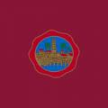

Córdoba
 De: La Frikipedia, la enciclopedia extremadamente seria.
De: La Frikipedia, la enciclopedia extremadamente seria.
| De la serie ciudades del mundo:
|
| Córdoba
|
| 
|

|
| (Bandera)
|
(Escudo de armas)
|
|
| Topónimo oficial
|
La P olla de España
|
| País
|
España
|
| Código postal
|
14XXX
|
| Superficie
|
En grandes y despobladas cantidades
|
| Altitud
|
Hundida
|
| Distancia
|
400km de Madriz
|
| Fundación
|
Edad de piedra
|
| Población
|
Trabajadores y gitanos
|
| Gentilicio
|
Cordobé/esa
|
| Alcalde
|
Jose Antonio Nieto
|
Este artículo trata sobre la casa matriz. Para la sucursal argentina, véase Córdoba (Argentina).
Córdoba es el mundo casi perfecto, todos los habitantes son cintreocatas, para los incultos como tu, cintreocatas son todos los elogios multiplicados por Pi. Esta situada en el norte de Andalucía y por lo tanto es la menos paleta de las provincias.
Historia
No ha tenido presidentes, pues todo el mundo esta siempre de acuerdo y viven en armoniosa felicidad. Fué la ciudad mas importante de la península en la poca romana ya que los romanos vieron que habia un monton de tias buenas hacía mucho sol y que se estaba a gustito. También ha sido la capital del imperio árabe de occidente y la ciudad mas avanzada de la época, pero a los reyes españoles no les caian bien los moros y decidieron echarlos a patadas de la península. Tras esto Córdoba a sido una ciudad de segunda linea y sin gran importancia, aunque dispone de una gran playa llamada Málaga en la que en los meses de julio y agosto los cordobeses migran cual aves. Con los emperadores de Izquierda Undida y sobretodo con la antigua emperatriz Rosa Bollera Aguilar (que abdicó y ha uido a Sevilla tras ver que iba a ser atomizada) se intentó volver a ser una ciudad de gran importancia, pero solo se ha conseguido pasar de 2a fila a 19a fila en importancia nacional.
Lugares
- La Mezquita: Lugar mas famoso y emblemático de la ciudad, su mayor característica es que siempre esta rodeada de guiris y japoneses. Los rumanos hace tiempo que empezaron a invadir la mezquita en busca de tesoros que robar y un nuevo hábitat que mierdear.
- Málaga: Dícese de la playa de Córdoba... Lugar privilegiado ya que ha acogido en sus vacaciones a todos los cordobeses. Gracias a esto, Málaga a podido situarse en el mapa. En su inmensa variedad de lugares recreativos se encuentran Benalmádena, Torremolinos o Fuengirola. Con la inauguración del AVE Córdoba-Málaga, se prevé que Málaga pase de ser una colonia a barrio cordobeh de vacaciones ya que la población cordobesa ocupará Málaga de manera permanente.
- El polígono: Barrio chungo donde encontrar droja, radios baratas y todo tipo de materiales robaos por jitanos ke no les gusta trabajal. Está habitado por gitanos y yonkis que celebran sus fiestas al rededor de hogueras con sus litros y sus petas. Las calles Motril, Marbella y Torremolinos son los núcleos de chungosa actividad, se da por hecho que el que entra en estas calles sale convertido en pinchitos o en gayunbos.
- El brillante: Lugar donde se reunen los pijos para vivir. Esta compuesto por cientos de chalets donde los millonarios organizan sus reuniones del club del libro. Al estar en la parte alta, se cree que esto se hizo para evitar que los pijos se juntaran con la poblacion normal, ya que dicho contacto se supone que destruiría la pijería exclusiva del brillante.
- El centro: Aquí se encuentran entre otras cosas el ayuntamiento, la plaza de las tendillas, el bulevard y el corte inglé. Zona donde siempre que salgas te encontrarás con amigos, conocidos, vecinos, enemigos, con rumanos pidiéndote 500€ y sobre todo muchas tias buenas. Las obras del Plan E se encarg.an de taponar todas las calles de esta zona sin excepción. Junto al ayuntamiento discurre un áurea maligna de corrupción que se achaca a los políticos del ayuntamiento, por lo que se recomienda la circulación por esta zona solo los domningos (que esta vacio el ayuntamiento) para evitar contagiarse.
- La juderia: Parte antigua donde se encuentran la mayoria de monumentos (ejemplo, el burguer king) que dan grandeza a esta ciudad además de ser un sitio donde perderse facilmente, cuenta la leyenda que cientos de guiris viven perdidos en las calles de la judería debido a que no son capaces de salir de ahí. Si usted se encuentra con alguno de ellos, se recomienda no hacerle caso, ya que para tener compañía durante su milenaria estancia en la judería harán todo lo posible para que usted también se pierda. Si se encuentra con rumanos pidiendo, no les de limosna, ya que de lo contrario (si, sí les da limosna) le persiguirán para que les de toda la cartera.
- El arenal: Recinto ferial en mayo que acoge a la mejor portada de feria del universo en mayo y suele ser un desierto el resto del año. Además es una zona conocida por ser el picadero mas famoso de la ciudad. En verano lleva siendo habitual hacer barbacoas y botellones en dicha zona, por lo que está adquiriendo una nueva faceta pero siempre será el arenal ultimamente se utilizaba como casa de campo yaque tava yeno de negras prostitutas.
- Los Ministerios: También conocido como "Los Minis". Resulta curioso que en un sitio como este, donde la policía pasa "a to polla p'arriba y p'abajo" se concentren tantas personas para hacer botellón, y sobre todo para fumar (no tabaco precisamente). Es bastante común encontrar todo tipo de tribus reunidas. Predominan hippies, raperos, heavys, y a veces, gente corriente. Su principal característica es el cesped, que proporciona un asiento cómodo y fresco, ideal para el verano. Tiene un gran PERO, y es que tiende a tragarse todo lo que dejas sobre él. Cuenta la leyenda que bajo el cesped de los minis se encuentra el mayor alijo de droga jamás oculto. Actualmente se encuentra cerrado porque a la polisía les dio un día por cobrarse el dinero de la universidad de sus niños y pusieron multas a tó quisqui que andase por allí, para después clausurar el sitio y meterse toda la droga escondida.
- La sierra: Lugar emblemático de la ciudad ya que aquí se realiza la sagrada tradición del perol. Raro es que todavía no haya sido urbanizada ni que todavía haya salido ardiendo.
- El nuevo arcangel: El estadio de nuestro querido Córdoba CF donde algunos sabados y domingos puedes
sufrir disfrutar y dejarte la garganta por un precio no superior a 15 €. Si quieres ver como un equipo de 2a B pierde una y otra vez, no dudes en venir a este estadio. Durará como tal el tiempo que tarden en aplicarle el PLAN E.
- Ciudad jardin: Barrio concéntrico de Córdoba donde puedes encontrar grandes lugares de interes como el bazar (los moros), el Zoco o incluso varios telepizzas... Zona llena de bares y muchas tiendas de variado tipo pero tan aburrida como la ciudad entera. Si te vas a la zona norte del barrio te teletransportas a Sudamérica y a Chinalandia.
- Levante: Parte de la ciudad llena de trabajadores donde solo hay pisos y nada de diversión.
- Trassierra: zona habitada por yonkis y las plantas que se fuman. La policía se suele colocar a la salida los sábados por la noche para pagar la universidad, ahora a sus nietos.
- El parking de ETEA: situado al lado del zoológico, es el epicentro del macrobotellón día sí y día también. Se peta de canis y otros seres del inframundo que se escapan de sus jaulas, aunque de vez en cuando se ve alguna barricada montada por gente normal que se defiende de estos seres.
Aportaciones a la humanidad
- Toda la comida que está buena procede de Córdoba, incluso el sushi japonés procede de aquí.
- Todas las modelos, actores y actrices que esten buen@s no lo dudes, descendientes de alguien de Córdoba.
- Reduccion del calentamiento global, los cordobeses respiran aire contaminado, lo filtran y sale aire puro. El desecho es enviado al rio para que luego llegue a Zerdiya.
- La mejor feria del mundo.
- El sexo eficiente.
- Las drogas (A los humanos les afectan negativamente, a los cordobeses nunca les pasa eso e incrementean sus ganas de fiesta).
- En verano se puede cocinar en el capó de los coches, en la acera o cualquier lugar al sol.
- El video "dos chicas y una pared" (no confundir con 2 chicas y una copa) fue rodado en Córdoba
- YAO
- Las Cordosiesas
- Pepe Reina
- El salmorejo
Problemas de la ciudad
Córdoba solo tiene un problema, buena parte de su población considera que la ciudad es tan buena (aún cuando se hunde en la decadencia) que no le hace falta ningún cambio y los pocos que quieren cambiar a mejor la ciudad se ven oprimidos por ese gran grupo de catetos. Los rumanos y los moros hace tiempo que se han hecho con ciertas zonas que se han perdido para siempre, se cree que se intentarán dividir la ciudad en dos partes: la parte debajo del río Guadalquivir irá para el rey marroquí y la parte norte del guadalquivir pasará a ser una ciudad rumana. Entre medias, Sevilla azuza para acabar con todo el esplendor histórico de córdoba, aunque esta ciudad fundada por el monstruo de las cavernas se dedica a putear a todo bicho viviente que no sea de Sevilla.
Relaciones diplomaticas
- Los cordobeses y Estados Unidos tienen pactado que nunca se atacarian. No quieren que el universo se destruya debido a la Tercera guerra mundial.
- Loh Cordobeseh tamos peleaos con loh sevillanoh, porque se kren ellos mu ways con los canis, aunque noh aliviamoh cuando pensamoh ¿¿A onde van loh desechoh que tiramo' por el vater?? po' a Zerdiya.
Copias baratas
Hay unas 89 ciudades en toda América que se llaman Córdoba, pero solo esta es la verdadera. Las demás son copias para intentar alcanzar la grandeza de la original. Estas ciudades estan malditas, porque cordoba tiene ©.
¿Sabías que...
- ...Córdoba es el lugar mas caluroso del planeta?
- ...loh Shebiyanoh envidian a los cordobeses?
- ...los cordobeses son masoquistas y por eso son del Córdoba CF?
- ...la alcaldesa de la ciudad es muy bollera? Bueno, la antigua, la desgracia' dejó el suelo del Puente Romano feo de cohone, ahora está el Nieto
- ...los autobuses de la ciudad son verdes?
- ...increiblemente la hierba también?
- ...semos cordobeses?
- ...los sevillanos se empeñan en superar a Córdoba? Como en la competición de salmorejo, en la que se vieron claramente derrotados al no disponer de las materias primas de la tierra donde se creó este maravilla gastronómica.
- ... no son cordobesas son cordosiesas?
- ... el cordobéh es el único acento andalú que se entiende?
Véase también
Autor(es):
- Krusher
- Fordus
- Doctor grijander
- Juan-Carandell
- Frikiman
- Aque
- El Sevillano
- Erazor
- Cubanito
- Angelito
Frikipedia 2005-2016, Licencia
GFDL 1.2 - Extraído por FrikiLeaks